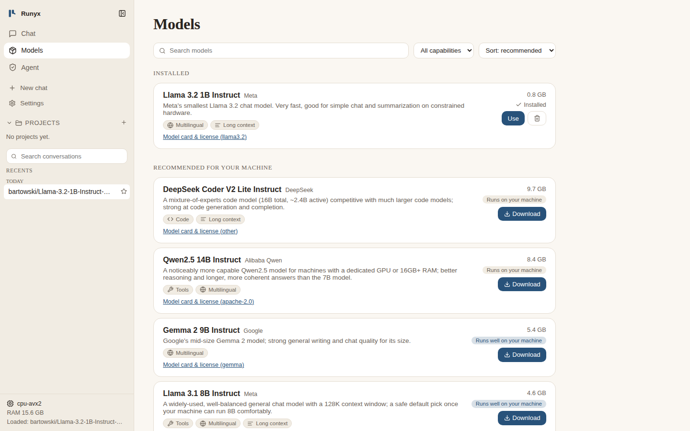

Pick a model from a list, not a file name.
The Models page is a curated catalog. Each entry says what the model is good at, how big it is, and whether your machine can run it. Download, pause and resume from the same screen. Hugging Face GGUF search is built in.
- Fits your hardware. Runyx reads your RAM and GPU and marks each model as runs well, runs, or too heavy.
- Resumable downloads. Interrupted pulls continue where they stopped and are checked with a hash.
- Already use Ollama? Import your local models and keep your existing tools: Runyx answers on both the Ollama and the OpenAI API shapes.
